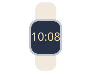

— 年度领队盛典 —

我的领队我来夸！是旅途中的可靠担当，也是把快乐带给大家的人。分享 TA 的闪光时刻，让更多人看见这份热爱。
带团之外，领队在忙什么？踩线、备课、整理装备，或是出发前的小小仪式。晒出你的领队日常，让大家看见旅途背后的故事。
全站所有符合评选要求的领队均可参与投票角逐。
最终追光值前50名将获得“2026年度人气领队”称号。
活动页展示前 18 名；点击“查看完整榜单”可查看完整排名。排名与票数以正式活动数据为准。
投票任务及 OPPO 奖品详情将在活动开启时公布。
人气领队按最终追光值评选，前50名获得“2026年度人气领队”称号。其他奖项每天上午 10:00 揭晓 2–3 个，未揭晓席位以问号展示。
具体评选标准、投票任务、活动时间及奖品规则将在官方公布后补充。


 手机好礼平板好礼耳机好礼
手机好礼平板好礼耳机好礼